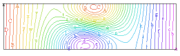

|
anisotropic_stress |

  
|
|
anisotropic_stress |
|
{ ANISOTROPIC.PDE
This example shows the application of FlexPDE to an extremely complex
problem in anisotropic thermo-elasticity. The equations of thermal
diffusion and plane strain are solved simultaneously to give the
thermally-induced stress and deformation in a laser application.
-- Submitted by Steve Sutton
Lawrence Livermore National Laboratory
}
title "ANISOTROPIC THERMAL STRESS"
select
errlim = 1e-4 { more accuracy to resolve stresses }
variables
Tp(5) { Temperature }
up(1e-6) { X-displacement }
vp(1e-6) { Y-displacement }
definitions
Qs { The heat source, to be defined }
Q0 = 3.16
ro = 0.2 { Heat source radius }
W = 2 { slab size constants }
L = 0.5
mag = 5000
kp11 = 0.0135 { anisotropic conductivities }
kp33 = 0.0135
kp13 = 0.0016
C11 = 49.22e5 { anisotropic elastic constants }
C12 = 3.199e5 C13 = 23.836e5 C15 = -3.148e5 C21 = C12 C22 = 67.2e5 C23 = 3.199e5 C25 = 8.997e5 C31 = C13 C32 = C23 C33 = 49.22e5 C35 = -3.148e5 C51 = C15 C52 = C25 C53 = C35 C55 = 24.335e5
|
 |
ayy = 34.49e-6 { anisotropic expansion coefficients }
axx = 34.49e-6
azz = 25.00e-6
axy = 9.5e-6
h = 1.0
Tb = 0.
Q = Q0*(exp(-2*(x^2+y^2)/ro^2)) { Gaussian heat distribution }
{ some auxilliary definitions }
qx = -kp33*dx(Tp) - kp13*dy(Tp) { heat flux }
qy = -kp13*dx(Tp) - kp11*dy(Tp)
{ expansion stress coefficients }
apxx = C31*ayy + C32*azz + C33*axx + C35*axy
apyy = C11*ayy + C12*azz + C13*axx + C15*axy
apzz = C21*ayy + C22*azz + C23*axx + C25*axy
apxy = C51*ayy + C52*azz + C53*axx + C55*axy
exx = dx(up) { strain }
eyy = dy(vp)
exy = 0.5*(dy(up)+dx(vp))
{ stress }
sxx = C31*eyy + C33*exx + 2*C35*exy - apxx*Tp
syy = C11*eyy + C13*exx + 2*C15*exy - apyy*Tp
szz = C21*eyy + C23*exx + 2*C25*exy - apzz*Tp
sxy = C51*eyy + C53*exx + 2*C55*exy - apxy*Tp
initial values
Tp = 5.
up = 0
vp = 0
equations
Tp: dx(qx) + dy(qy) = Qs
Up: dx(sxx) + dy(sxy) = 0.
Vp: dx(sxy) + dy(syy) = 0.
constraints { prevent rigid-body motion: }
integral(up) = 0 { cancel X-motion }
integral(vp) = 0 { cancel Y-motion }
integral(dx(vp) - dy(up)) = 0 { cancel rotation }
boundaries
region 1
Qs = Q
start(-0.5*W,-0.5*L)
natural(up) = 0. { zero normal stress on all faces }
natural(vp) = 0.
natural(Tp) = h*(Tp-Tb) { convective cooling on bottom boundary }
line to (0.5*W,-0.5*L)
natural(Tp) = 0. { no heat flux across end }
line to (0.5*W,0.5*L)
natural(Tp) = h*(Tp-Tb) { convective cooling on top boundary }
line to (-0.5*W,0.5*L)
natural(Tp) = 0. { no heat flux across end }
line to close
monitors
grid (x+mag*up,y+mag*vp)
contour(Tp) as "Temperature"
plots
grid (x+mag*up,y+mag*vp)
contour(Tp) as "Temperature"
contour(Tp) as "Temperature" zoom(-.2,-.2,0.4,0.4)
contour(up) as "x-displacement"
contour(vp) as "y-displacement"
vector(up,vp) as "Displacement vector plot"
contour(sxx) as "x-normal stress"
contour(syy) as "y-normal stress"
contour(sxy) as "shear stress"
elevation(Tp) from (0,-0.5*L) to (0,0.5*L) as "Temperature"
elevation(sxx) from (0,-0.5*L) to (0,0.5*L) as "x-normal stress"
elevation(syy) from (0,-0.5*L) to (0,0.5*L) as "y-normal stress"
surface(Tp) as "Temperature"
end
Page url: index.html?applications_stress_anisotropic_stress.html